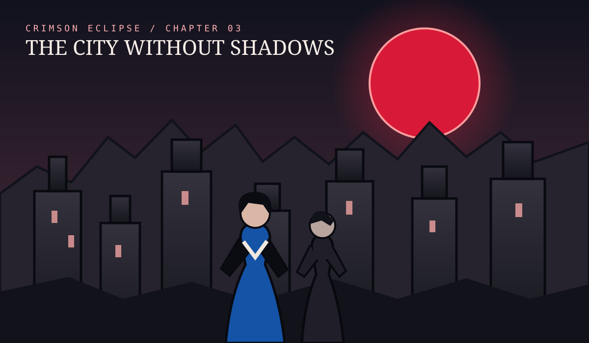
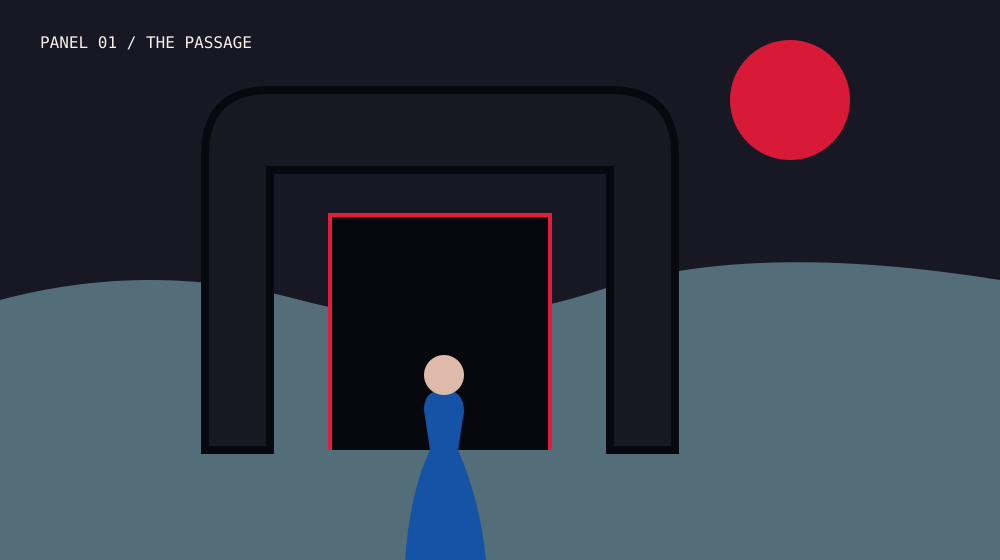
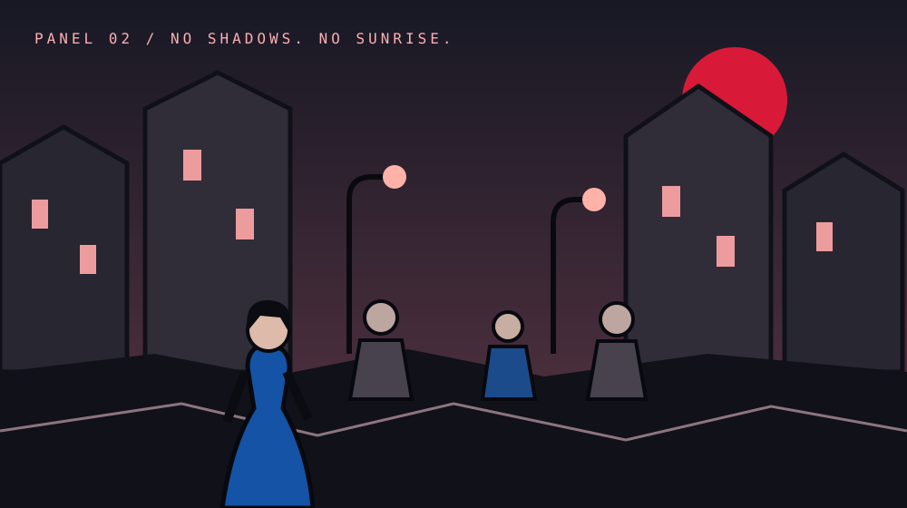
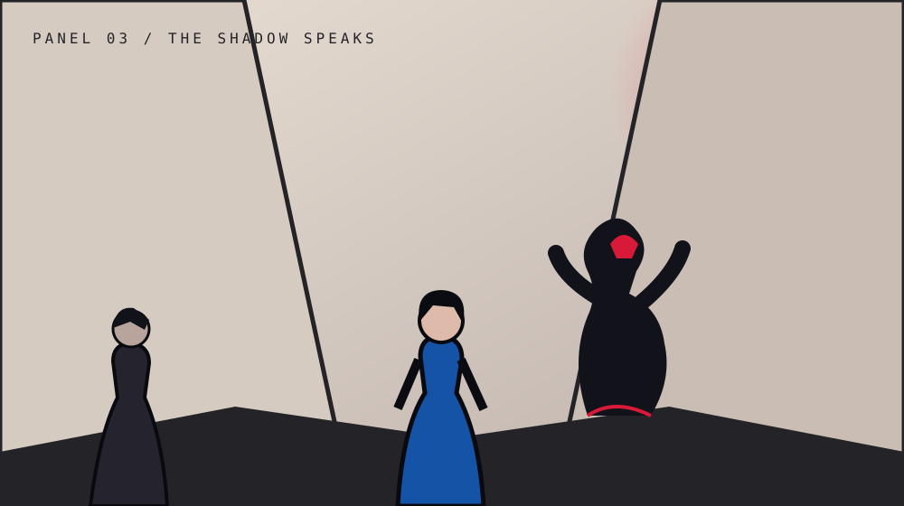

CHAPTER 03
The City Without Shadows

Mara crosses the gate and enters Noctis, a city where no one casts a shadow.
The Passage

No Sunrise

The Shadow Speaks

At Mara’s feet, two shadows stretch in opposite directions. Above Noctis, the crimson moon opens like an eye.
Return to the beginning